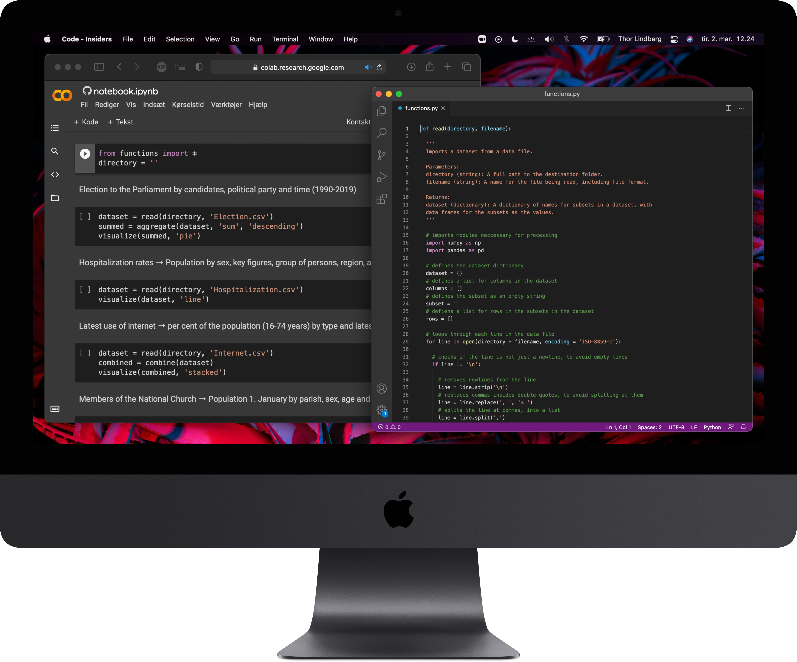
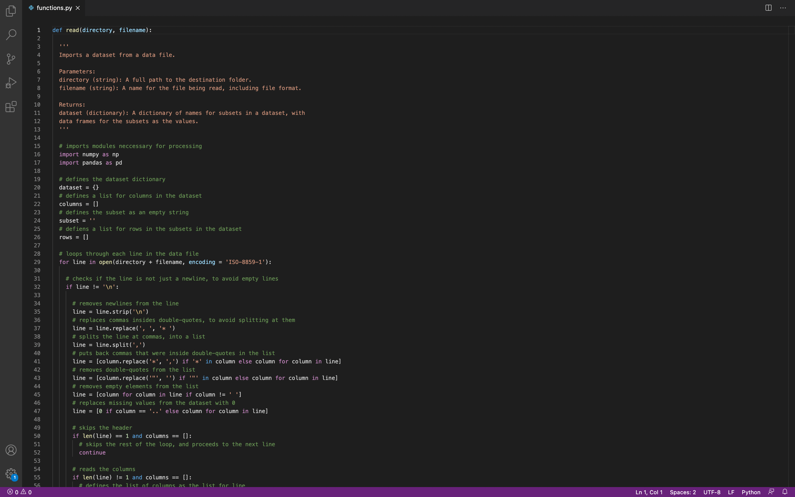
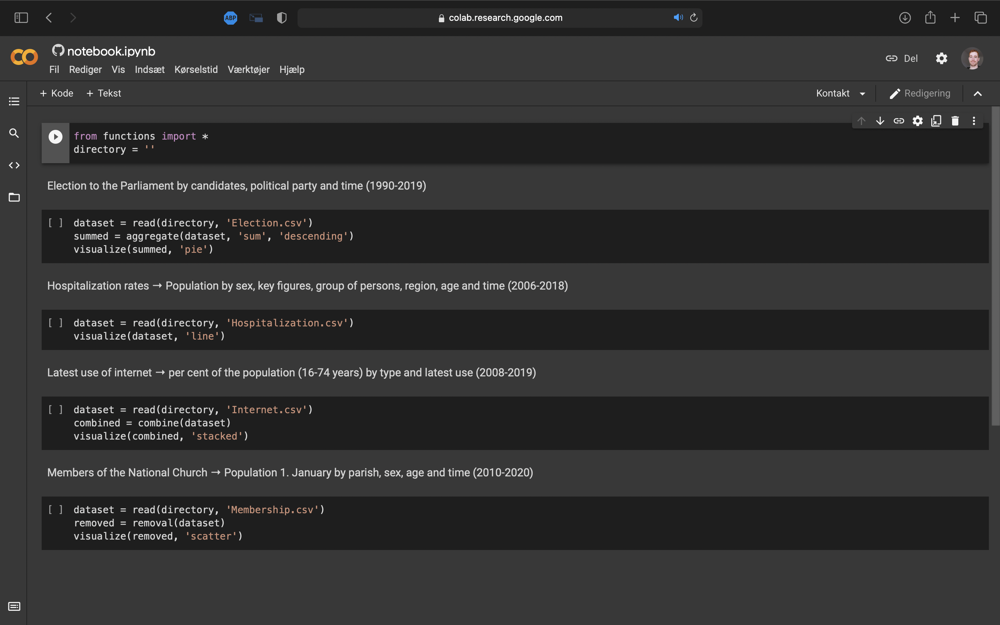
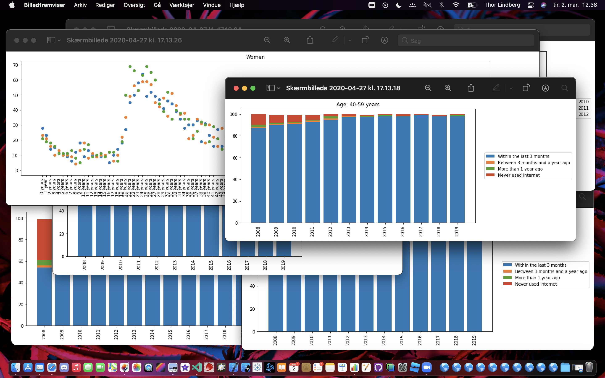
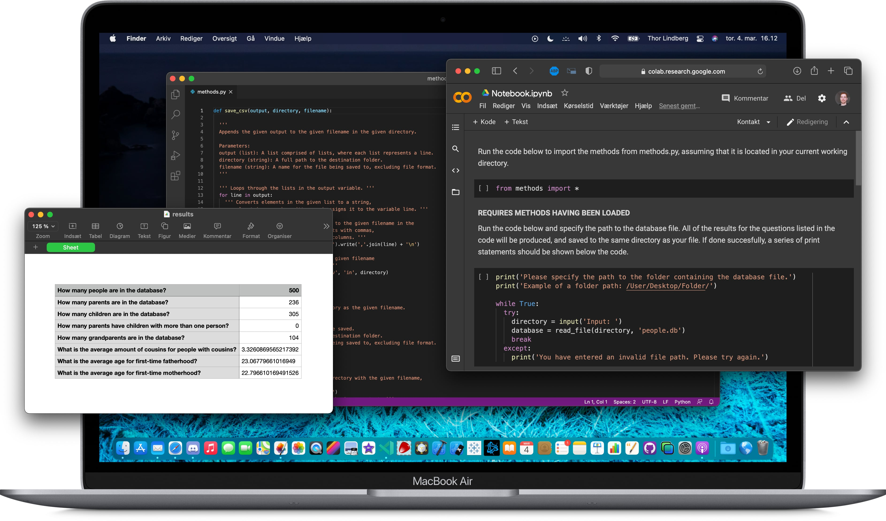

Screenshots



Danmarks Statistisk (Denmark's Statistics) provides a large amount of datasets for various measurements on the Danish population.
Based on Python, this series of functions reads a dataset of an applicable structure, and provides several options for statistical analysis.
Analyzed datasets can be visualized as plots, by selecting a visualization option during analysis.
Information
Compatibility
Python
Requires Python 3.8 or later.

In this project, an anonymized healthcare dataset from the Central Person Registry (CPR) was processed with the programming language Python, producing a rich set of analytical output in tabular format. These tables reveal generational trends of geneological traits, including height, weight, and eye color. In addition, general statistics within the dataset were computed, including age-gender distributions, generations, and blood donation between children, parents and grandparents.
The methods produced with Python were designed to be applicable to any dataset of similar structure to the analyzed dataset. Reusability and flexibility were values emphasized during the construction of the code and its flow, resulting in Python code that is efficient and easily readable.